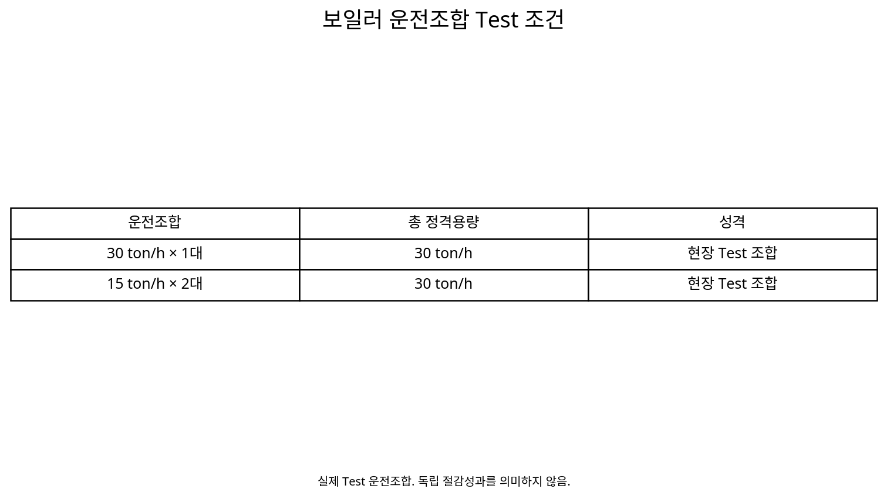

보일러 부하율과 연료 원단위 상관분석을 통한
가동대수 및 고효율 운전영역 최적화
보일러가 낮은 부하율로 운전될 때 연료 원단위가 상승하는 현상을 실제 운전데이터에서 확인하고, Steam Demand에 맞춰 보일러 용량조합과 가동대수를 조정하여 저부하 비효율을 줄이려 한 Boiler System 최적화 사례.
Boiler LoadPart-load EfficiencyN㎥/tonBoiler StagingSteam Demand1. 보일러는 켜져 있기만 하면 같은 효율로 스팀을 만드는가?
보일러의 연료효율은 정격효율 하나로 고정되지 않는다. 실제 Steam Demand가 낮아 보일러가 낮은 부하율에서 운전되면 방열·배기가스·대기손실 등 고정성 손실의 상대적인 비중이 커지고, 잦은 Burner Cycling까지 발생하면 스팀 1 ton을 만드는 데 필요한 연료량이 증가할 수 있다.
2. 이론적 배경 — 저부하에서는 고정손실과 Cycling 손실의 비중이 커질 수 있다
전통적인 산업용 보일러는 부하가 낮아질수록 연료 1단위 가운데 유효한 Steam 생산으로 전환되지 않는 손실의 상대적 비중이 커질 수 있다. DOE의 Boiler O&M 가이드는 일반적인 보일러에서 낮은 Firing Rate로 갈수록 효율이 감소할 수 있으며, 저부하에서 잦은 On/Off Cycling이 발생하면 Pre-purge와 Post-purge 과정에서 뜨거운 공기가 Stack으로 빠져나가 추가 열손실이 발생한다고 설명한다.
따라서 ‘낮은 부하율 = 낮은 연료사용량’이라고 단순하게 볼 수 없다. 총 연료사용량은 줄어도 Steam 1 ton당 연료사용량(N㎥/ton)은 오히려 증가할 수 있다.
3. Turndown Ratio가 낮으면 저부하에서 Burner Cycling이 시작된다
Burner가 연속적으로 안정 운전할 수 있는 최소 Firing Rate 아래로 Steam Demand가 내려가면 더 이상 연소량을 낮추지 못하고 Burner가 정지·재기동하는 Cycling 영역으로 들어갈 수 있다. DOE의 Energy Information Handbook은 이를 Boiler의 Turndown Ratio와 연결해 설명하며, Oversizing된 보일러는 낮은 부하에서 Cycling이 반복될 가능성이 높다고 지적한다.
Steam Demand 감소 → Minimum Firing Rate 접근 → Burner Cycling → Purge·Standby Loss 증가 → N㎥/ton 상승 가능
다만 실제 Turndown Ratio는 Burner와 Boiler 형식에 따라 다르므로 CASE66의 현장 관찰값인 40%를 다른 설비의 보편적인 Cycling 기준으로 사용하지 않는다.
4. 기술동향 — 대형 단일 보일러에서 Modular Capacity로
DOE의 고효율 Boiler 구매 가이드는 부하변동이 큰 시설에서 하나의 대형 보일러만 사용하는 대신 여러 대의 작은 Modular Boiler와 Modulating Burner를 검토하도록 제안한다. 낮은 수요에서는 일부 모듈을 정지하여 Standby·Cycling Loss를 줄이고, 필요한 모듈만 효율적인 운전영역에서 가동할 수 있기 때문이다.
이 접근의 핵심은 총 설치용량을 줄이는 것이 아니라 현재 부하에 맞춰 Online Capacity를 더 세밀하게 조정할 수 있도록 Capacity Resolution을 높이는 것이다.
5. 해외 Boiler Sequencing은 ‘가장 적은 대수’보다 최적 부하영역을 본다
미국 DOE의 Steam Tip Sheet는 다중 보일러 시스템에서 부하가 증가할 때 효율이 좋은 보일러를 먼저 투입하고, 부하가 감소할 때 효율이 낮은 보일러를 먼저 정지시키며, 동시에 여러 보일러가 Low-fire 상태로 운전되는 경우 적절한 Boiler Allocation을 검토하도록 권고한다.
즉 Sequencing은 단순 Lead/Lag 순번이 아니라 현재 Steam Demand에서 어떤 조합이 가장 낮은 증분 연료비와 System 원단위를 만드는가를 판단하는 문제로 발전한다.
6. 실제 자료에서는 부하율 40% 이하에서 원단위 상승이 확인되었다
UT 운전최적화 완료자료에는 “부하율에 40% 이하 운전 시 원단위 상승”이 명시되어 있다. 프로젝트는 이를 확인하기 위해 보일러 설비 최적화 운영 Test 계획을 수립하고 부하율과 Boiler System 원단위의 상관관계를 분석했다.
이 결과는 저부하 운전이 단순한 여유운전이 아니라 실제 연료 원단위를 악화시키는 운영문제가 될 수 있음을 보여준다.
7. 서로 다른 용량조합을 실제로 바꾸며 비교했다
| 기간 | 가동호기 | 운전용량 구성 |
|---|---|---|
| ~10/20 | 2호기 | 30 ton/h |
| 10/20~21 | 3호기 | 30 ton/h |
| 10/21~23 | 1호기 + 5호기 | 15 ton/h × 2대 |
즉 동일한 Steam Utility를 공급하면서 대형 보일러 1대 또는 소형 보일러 2대와 같은 용량조합을 변경하여 부하율과 원단위가 어떻게 달라지는지를 검토했다.
8. CASE66의 핵심 질문은 ‘현재 수요에 어떤 용량조합이 맞는가?’이다
Steam Demand가 12~18 ton/h 수준이라면 30 ton/h 보일러 한 대를 운전할 때와 15 ton/h 보일러 두 대를 운전할 때 각 호기의 부하율이 달라진다. 따라서 설치용량이 충분하다는 사실만으로 효율적인 운전이라고 할 수 없다.
Steam Demand → 가동가능 보일러 → 용량조합 → 각 호기 Load Factor → System N㎥/ton
9. 부하율은 실제 스팀생산량을 가동 중인 정격용량과 비교해 본다
System 수준에서는 현재 스팀생산량과 가동 중인 보일러의 정격 스팀용량 합계를 이용해 전체 부하율을 파악할 수 있다. 실제 에너지효율관리 시스템에도 스팀생산량, 가스량, 원단위, 가동대수, 필요대수, 가동 중 보일러 정격유량 합과 부하율을 함께 관리하는 구조가 설계되어 있었다.
Production
Capacity
Load Factor
Consumption
N㎥/ton
10. 낮은 부하율에서 원단위가 상승하는 이유를 함께 진단한다
저부하 원단위 상승은 보일러 자체의 효율곡선뿐 아니라 Burner Turn-down, 잦은 On/Off, 과잉공기, 배기가스온도, Blowdown, 대기손실과 Steam Header 압력조건의 영향을 받을 수 있다.
따라서 40%라는 현장 관찰값을 모든 보일러의 보편적 임계점으로 사용하지 않고, 각 설비에서 부하율별 Performance Curve를 다시 확인해야 한다.
11. 목표는 최소 가동대수가 아니라 고효율 운전영역을 유지하는 것이다
보일러 대수를 무조건 줄이면 남은 설비가 과부하되거나 Steam Pressure가 불안정해질 수 있다. 반대로 너무 많은 보일러를 켜면 각 호기가 낮은 부하율에 머물 수 있다.
따라서 목표는 Steam Demand를 안정적으로 만족하면서 가동 중인 보일러가 효율적인 부하영역에서 운전되고 System N㎥/ton이 최소가 되는 가동대수를 찾는 것이다.
12. CASE65와 다른 점은 ‘어느 호기인가’보다 ‘몇 대·어떤 용량조합인가’에 있다
앞 사례에서는 호기별 실제 N㎥/ton 차이를 이용해 고효율 호기를 식별하고 우선운전했다. CASE66에서는 한 단계 더 나아가 Steam Demand와 부하율을 기준으로 가동대수와 보일러 용량조합을 결정한다.
따라서 호기별 효율 Ranking과 System Staging은 서로 연결되지만 다른 의사결정 문제다.
13. Test는 Steam Demand가 유사한 조건끼리 비교한다
30 ton/h 한 대와 15 ton/h 두 대의 원단위를 비교할 때 Steam Demand, Steam Pressure와 급수조건이 크게 다르면 용량조합 효과와 외부조건의 영향이 섞인다.
가능하면 유사한 스팀부하 구간을 선택하고 충분한 안정화시간을 둔 뒤 Gas Flow, Steam Flow와 System N㎥/ton을 비교한다.
14. 필요한 계측항목을 미리 준비한다
| 계측·상태항목 | 판단 목적 |
|---|---|
| Steam Flow | Demand 및 부하율 |
| Gas Flow | N㎥/ton |
| Online Boiler / Rated Capacity | 가동대수·용량조합 |
| Steam Pressure | 공급품질 유지 여부 |
| Feed-water Temperature | 열입력 조건 |
| Burner On/Off / Firing Rate | 저부하 Cycling 확인 |
| O₂ / Stack Temperature | 연소·배기손실 진단 |
15. 운전기준은 단일 임계값보다 Load Band로 만드는 것이 좋다
실제 Steam Demand는 계속 변하므로 “40% 아래면 무조건 정지” 같은 단순 Rule보다 부하구간별 권장 조합을 만드는 편이 안전하다.
예를 들어 Low / Medium / High Demand 구간마다 가능한 보일러 조합을 비교하고 Steam Pressure, 최소운전시간과 예비력을 만족하는 범위에서 System N㎥/ton이 가장 낮은 조합을 선정한다.
16. Stage-up과 Stage-down에는 Hysteresis가 필요하다
Steam Demand가 경계값 주변에서 반복적으로 변할 때 보일러를 계속 기동·정지하면 Burner Cycling과 운전불안정이 커질 수 있다. 따라서 추가호기 기동점과 정지점을 다르게 설정하고 일정시간 조건이 유지된 뒤 대수를 변경하는 것이 좋다.
Demand Threshold + Hysteresis + Minimum On/Off Time + Steam Pressure Failsafe
17. 18단계 Boiler Staging 분석 Process
① Boiler Inventory → ② Rated Capacity → ③ Steam Demand Profile → ④ Online Units → ⑤ Online Capacity → ⑥ Load Factor → ⑦ Gas Flow → ⑧ N㎥/ton → ⑨ 저부하 영역 식별 → ⑩ 용량조합 후보 → ⑪ 유사부하 Test → ⑫ 안정화 → ⑬ Steam Pressure 확인 → ⑭ System N㎥/ton 비교 → ⑮ Stage-up/down 기준 → ⑯ Hysteresis·Runtime → ⑰ Operating Map → ⑱ 지속 Monitoring
18. 현대식 Condensing Boiler는 ‘저부하가 나쁘다’는 단순 규칙의 예외가 될 수 있다
저부하 효율저하는 모든 Boiler Technology에 동일하게 적용되지 않는다. CIBSE는 현대식 Condensing Boiler의 경우 낮은 Firing Rate에서 효율이 좋아질 수 있으며, 여러 Boiler Module을 낮은 부하로 함께 Modulation하는 Unison Control이 소수의 보일러를 높은 출력으로 운전하는 Step Control보다 유리한 경우도 있다고 설명한다.
따라서 CASE66의 “40% 이하 원단위 상승”은 해당 산업용 Steam Boiler 현장의 실제 관찰로 유지하되, 다른 현장에서는 Boiler Type, Condensing 여부, Return-water Temperature, Burner Turndown과 Pumping을 확인한 뒤 Sequencing 전략을 정해야 한다.
19. Modular Boiler의 장점은 넓은 System Turndown과 Redundancy다
여러 개의 작은 Boiler Module을 조합하면 한 대의 대형 Boiler보다 System 전체가 대응할 수 있는 최소부하 범위를 더 낮출 수 있다. 필요한 모듈만 운전하면 낮은 Demand에서도 각 모듈이 안정적인 Modulation 영역을 유지할 수 있고, 한 모듈의 정비·고장 시 나머지 모듈로 일부 용량을 유지할 수 있다는 장점도 있다.
반면 Module 수가 많아지면 초기투자, Pump·Valve·Control 구성과 유지관리 대상도 증가하므로 효율 + 신뢰성 + 제어복잡성 + 경제성을 함께 평가해야 한다.
20. Steam Boiler와 Hot-water Condensing Boiler의 Sequencing은 구분해야 한다
| 구분 | 산업용 Steam Boiler | 현대식 Condensing Hot-water Boiler |
|---|---|---|
| 주요 KPI | N㎥/ton Steam, Boiler Efficiency | Thermal Efficiency, Return-water Temperature |
| 저부하 주요 이슈 | Low-fire, Cycling, Purge·Standby Loss | Modulation 범위와 Condensing 유지 |
| Sequencing 방향 | 효율 좋은 호기에 부하배분, 과도한 Low-fire 회피 | 여러 Module의 효율적인 Modulation 가능 |
| 주요 제약 | Steam Pressure, 최소 Firing, 예비력 | Return Temperature, Minimum Flow, Pumping |
이 구분을 하지 않으면 건물용 Condensing Boiler의 제어전략을 산업용 Steam Boiler에 그대로 적용하거나 그 반대의 오류가 생길 수 있다.
21. 설계단계에서는 Peak Load뿐 아니라 연간 Load Histogram을 본다
DOE는 Boiler Sizing에서 Peak Demand뿐 아니라 실제 Load Profile을 함께 보도록 권고한다. 설비가 Peak만 기준으로 과대선정되면 대부분의 운전시간을 낮은 부하에서 보내면서 Cycling이 증가할 수 있기 때문이다.
따라서 신규·교체설계에서는 연간 Steam Demand Histogram을 이용해 Base-load, Intermediate-load와 Peak-load 영역을 구분하고, 대형 1대와 소형 여러 대의 조합을 비교하는 것이 좋다.
22. 해외 동향을 CASE66에 적용하면 ‘40% Rule’이 아니라 Performance Map이 된다
CASE66의 실제 현장결과는 40% 이하에서 원단위가 상승했다는 것이다. 이를 다른 현장으로 확장할 때는 특정 숫자를 복사하는 대신 각 Boiler의 Load Factor × Fuel Rate × Steam Output × Cycling Frequency를 측정해 Performance Map을 만든다.
그 결과를 이용하면 “몇 % 이하에서 한 대를 정지할 것인가”, “어떤 용량의 Boiler를 추가 투입할 것인가”, “어느 호기를 Base-load로 둘 것인가”를 현장별 데이터로 결정할 수 있다.
23. 확대응용 — 서로 다른 용량의 보일러를 가진 Plant에서 특히 유용하다
대형·소형 보일러가 혼재된 제조공장에서는 Steam Demand에 따라 작은 보일러가 더 적합한 시간과 대형 보일러가 더 적합한 시간이 달라질 수 있다. 식품·제약·섬유·화학공장처럼 생산 Schedule에 따라 Steam Demand가 크게 변하는 현장에 적용하기 좋다.
또 병원이나 지역 Steam Plant처럼 신뢰성이 중요한 시설에서는 최소 예비용량을 제약조건으로 유지한 상태에서 최적대수를 결정해야 한다.
24. 설비투자 전에도 활용할 수 있다
Steam Demand Profile을 분석하면 기존 보일러가 반복적으로 저부하 운전되는지 확인할 수 있다. 이런 현장이 설비교체를 계획한다면 단순히 기존 최대용량을 그대로 교체하기보다 Base-load와 Peak-load를 나누어 서로 다른 용량의 보일러를 조합하는 방안을 검토할 수 있다.
즉 운전최적화 데이터가 향후 Boiler Capacity Sizing과 설비교체 의사결정에도 활용된다.
25. AI Predictive Boiler Staging으로 확장할 수 있다
생산계획과 과거 Steam Demand를 이용해 다음 시간대의 스팀부하를 예측하면 부하가 발생한 뒤 대응하는 방식에서 벗어나 필요한 보일러 조합을 미리 준비할 수 있다.
Schedule
Forecast
Scenarios
Prediction
Staging
여기에 최소운전시간, 예비력, Steam Pressure와 설비 가용상태를 제약조건으로 넣고 초기에는 Advisory Mode에서 권장 가동대수를 제시한 뒤 자동제어로 확대할 수 있다.
데이터와 분석 시각화

26. Evidence & Measurement Boundary
완료자료에서 직접 확인되는 사실은 “부하율 40% 이하 운전 시 원단위 상승”이라는 분석결과와, 이를 바탕으로 보일러 설비 최적화 운영 Test 계획을 수립했다는 점이다. 실제 Test 구간에는 30 ton/h 단일호기 운전과 15 ton/h × 2대 운전조합이 기록되어 있다.
다만 CASE65에서 사용한 66.62 vs 70.12 N㎥/ton, 5% 개선 및 1.8억원/년은 호기별 효율차이와 교체운전 성과에 해당하므로 CASE66의 독립 절감성과로 다시 귀속하지 않는다.
저부하 효율의 일반적 원인, Hysteresis, Operating Map, Capacity Sizing과 AI Predictive Staging은 실제 분석결과를 다른 현장에 적용하기 위한 기술적 확장이다.
27. Review 상태
Status: APPROVED / FINAL-LOCK